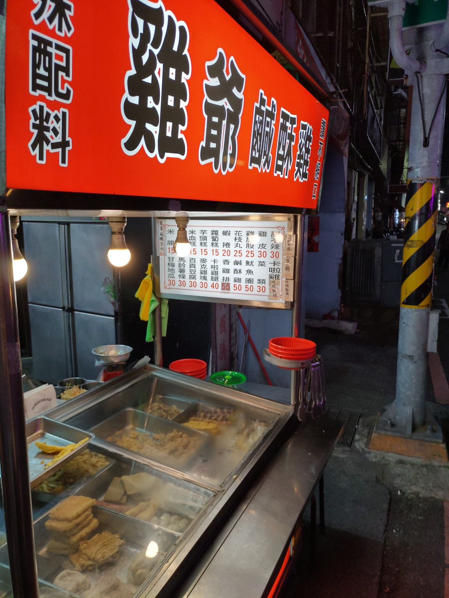
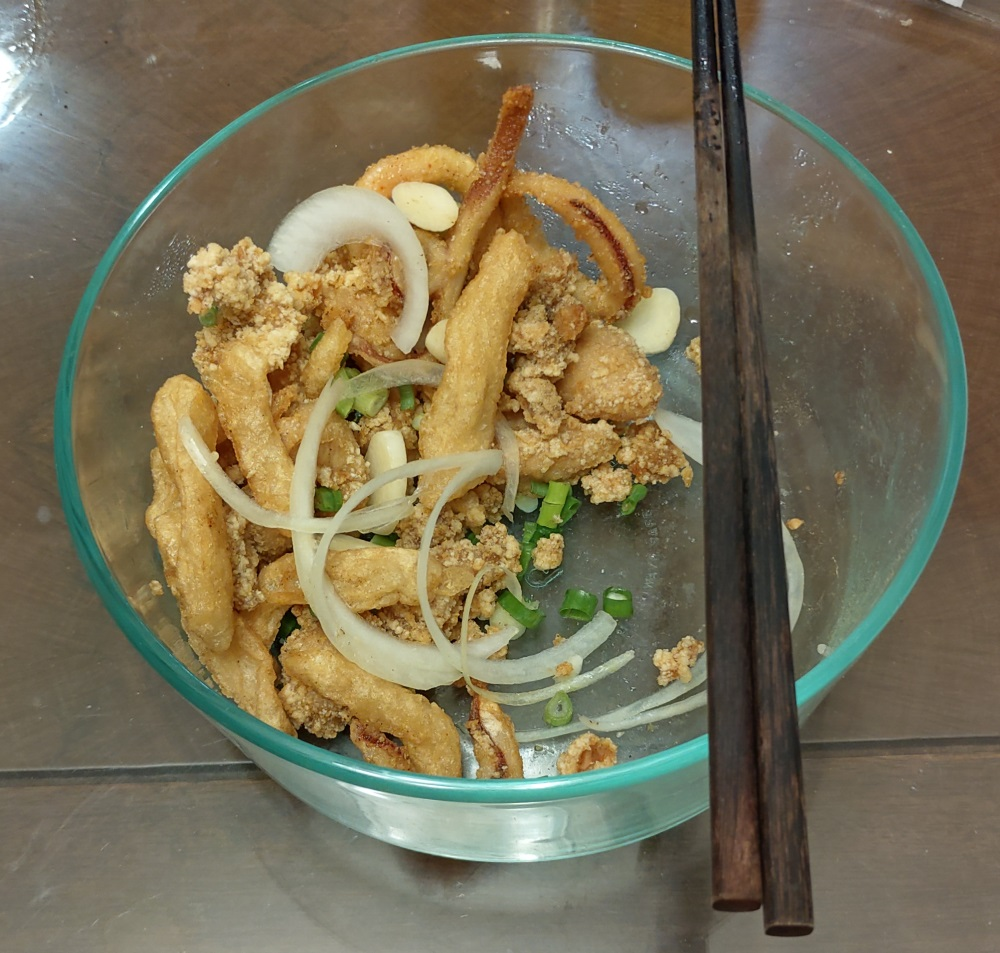

[新竹] 雞爺鹹酥雞
餐廳名稱: 雞爺鹹酥雞
地 址: 新竹市東區武昌街43號 雍藝紋身館前面
營業時間: 大概都晚上吧
有一段時間，常常在晚上10點左右，從林森路回竹北，所以 林森路的宵夜吃了很多家，也常外帶，鹹酥雞 也買了四、五家 以上，短時間密集地吃這幾家，舌頭漸漸將他們分出高下。 這家 雞爺鹹酥雞，按照本人口味，是林森路某路段五家鹹酥雞 的冠軍。 
點了鹹酥雞、甜不辣、魷魚圈，快吃完才想起拍照，這家的 派別是炸完後，除了撒胡椒鹽，還會撒洋蔥絲，蒜末、蔥花， 香氣比較複雜，不單調。 
雖然鹹酥雞是邪惡的食物，久久還是要吃一次，那吃一次的時候， 自然要找這種某路段五家鹹酥雞的冠軍囉。